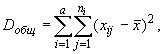
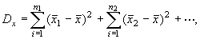
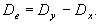
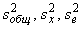
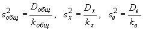
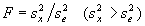

Однофакторный дисперсионный анализ
Дисперсионный анализ однофакторных комплексов
удобно проводить по следующей схеме:
- Первичные данные, подлежащие дисперсионному
анализу, группируют в виде комбинационной
таблицы (см. табл. 1), в которой градации
организованного (регулируемого) фактора A
обычно располагают по горизонтали в верхней
части таблицы, а числовые значения признака X
, т. е. варианты xij , размещают
соответственно по градациям фактора A.
- Сгруппировав исходные данные, как указано в
п. 1, приступают к расчету девиат:



где xij — варианты, или даты, входящие в
состав комплекса; ni — численность
вариант x в каждой из градаций дисперсионного
комплекса, a — число градаций действующего
фактора.
- Закончив расчет девиат, переходят к определению
чисел степеней свободы k , которые равны:
k общ = n1 + n2 +…–
1 для общего варьирования;
kx = a – 1
для факториального варьирования;
ke = k общ – kx
для
остаточной вариации.
Через a обозначено число градаций фактора A.
- Делением девиат на соответствующие числа
степеней свободы получают выборочные дисперсии :

- Наконец определяют дисперсионное отношение
,
по которому судят о действии фактора A на
результативный признак. Так как фактически
полученное дисперсионное отношение F
является величиной случайной, его необходимо
сравнить с табличным (стандартным) значением
критерия Фишера. Нулевую гипотезу отвергают и
эффективность действия фактора A на
результативный признак X признают
статистически достоверной, если F > F kx, ke( )
; в противном случае отвергать нулевую гипотезу
нельзя.
)
; в противном случае отвергать нулевую гипотезу
нельзя.